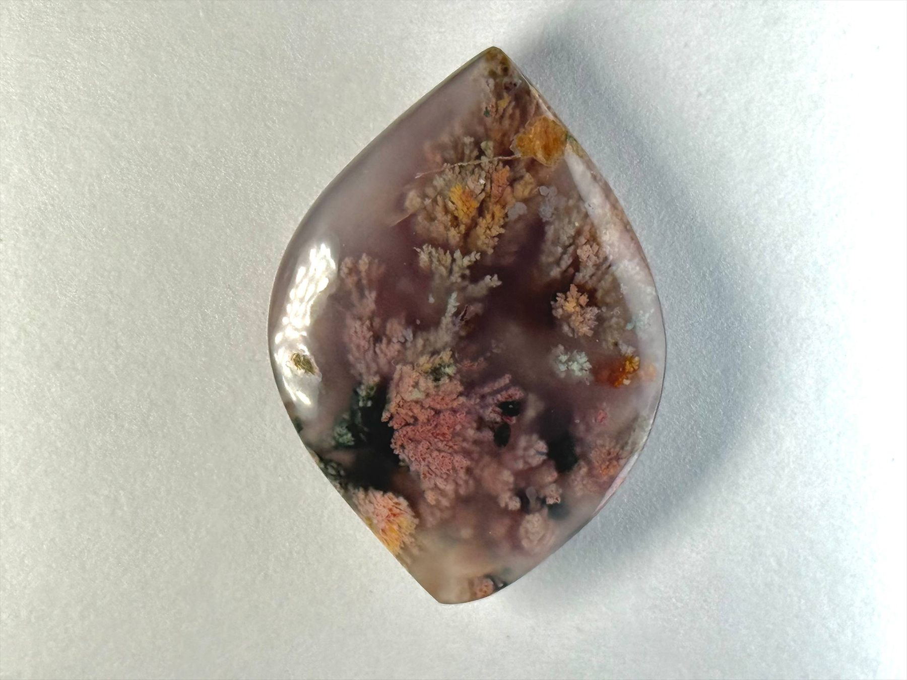
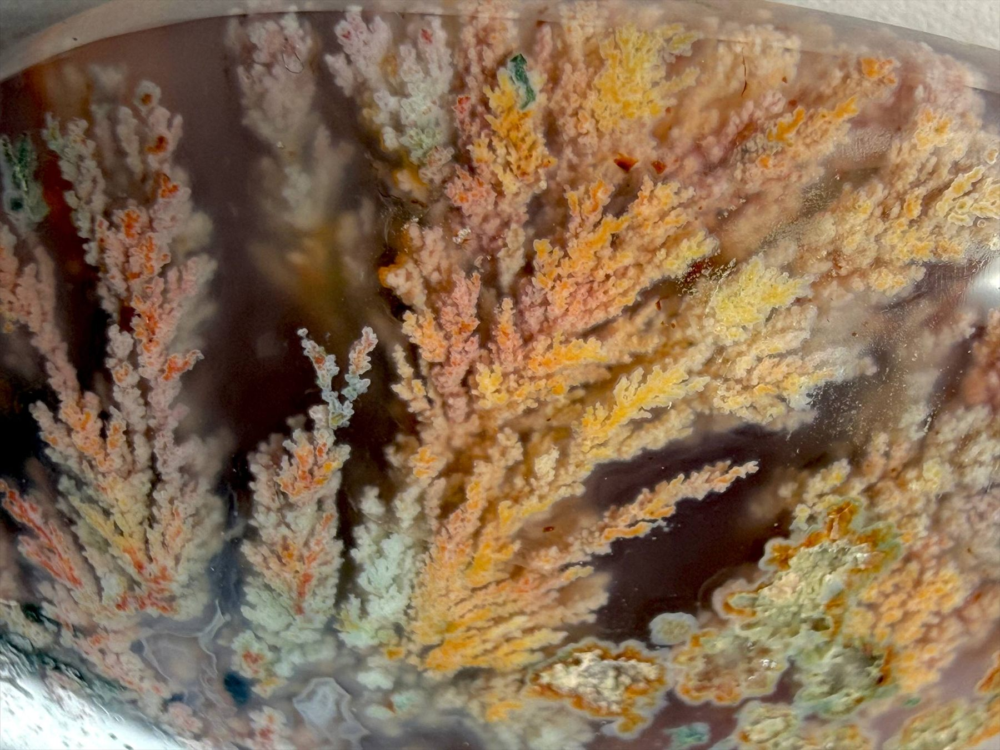
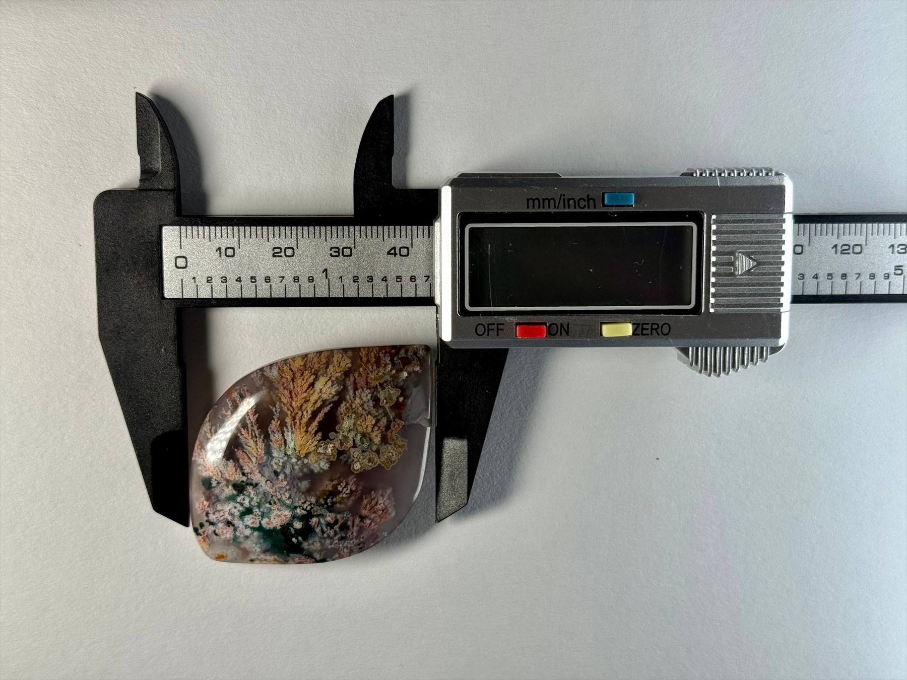

Ethereal Coralscape is a dendritic agate with soft, coral-like formations in shades of peach, warm gold and muted green floating in a lavender base. From one side the patterns read like a miniature reef; from the other they resemble blossoming branches in evening light. The elongated marquise cut gives the stone a graceful sense of movement, ideal as a focal piece in refined custom jewelry or a curated collection.


